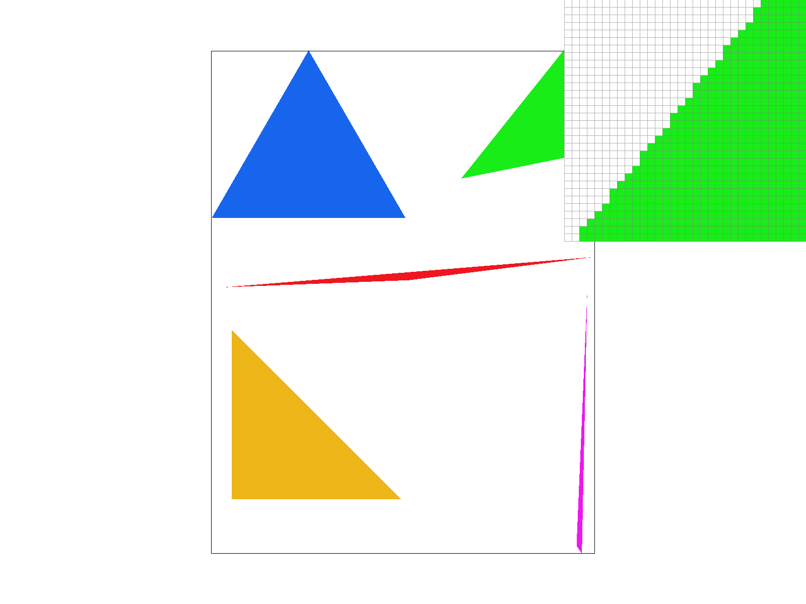
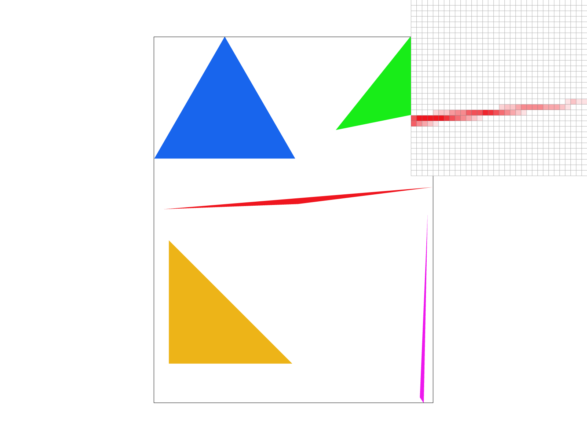
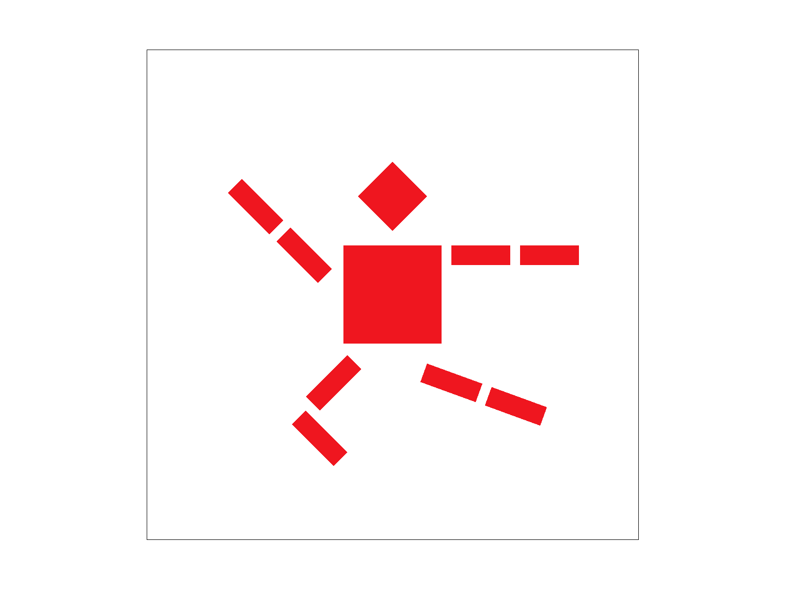
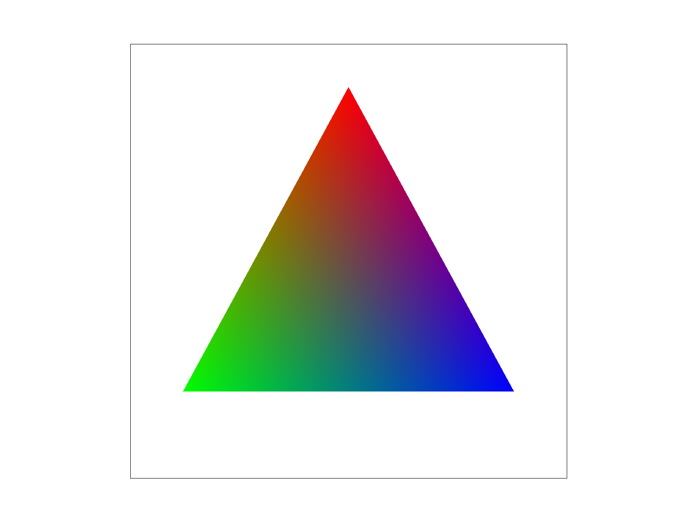
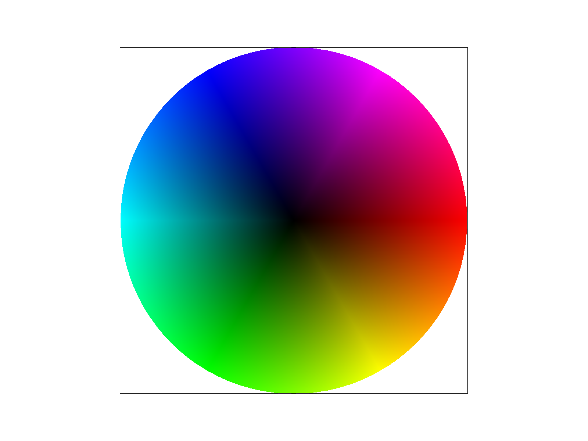
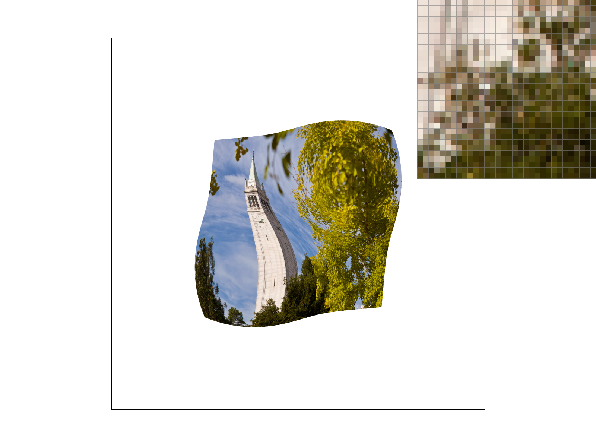
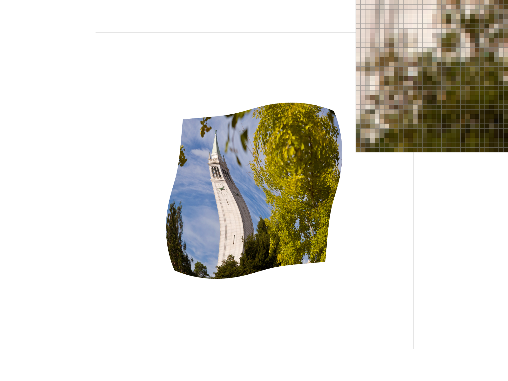
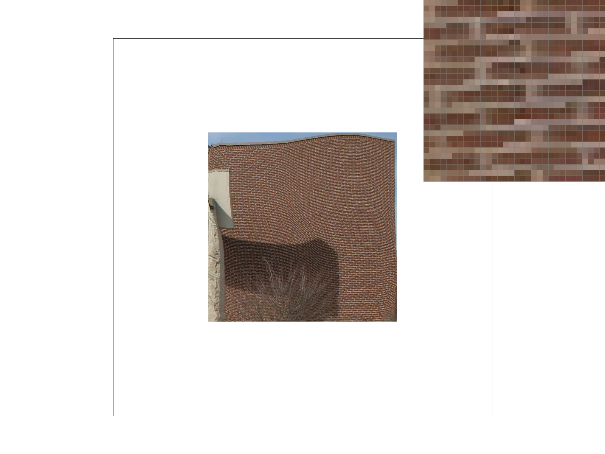

Give a high-level overview of what you implemented in this homework. Think about what you've built as a whole. Share your thoughts on what interesting things you've learned from completing the homework.
Task 1: Drawing Single-Color Triangles
To rasterize triangles, I first find the bounding box for the triangle by finding the minimum and maximum x- and y-coordinates the triangle requires. Then, I iterate through the centers of all pixels in this bounding box while using the point-in-triangle to check for if the points are inside all three lines of the triangle. I check if these edge values are all-positive or all-negative to account for both winding orders of the vertices. Since I only check through the viable x- and y-coordinates of the bounding box, my algorithm is no worse than checking each sample within the triangle’s bounding box.

Here is an image with the polygons filled in. We can see the jagged edges when zoomed in from the point-in-triangle process without any supersampling or anti-aliasing.
Here is an example 2x2 gridlike structure using an HTML table. Each tr is a row and each td is a column in that row. You might find this useful for framing and showing your result images in an organized fashion.
Task 2: Antialiasing by Supersampling
I implemented supersampling by dividing each pixel into a sqrt(sample rate) * sqrt(sample rate) grid. For each subpixel, I determined if its center was within the triangle. Supersampling is useful because each pixel's color is no longer dependent on just one pixel center where each pixel is either inside or outside the triangle. Instead, each pixel is assigned the average of its subpixels' colors, which reduces the jaggedness of edges produced through naive sampling.
I modified the rasterization pipeline to draw into the sample_buffer data structure (vector of colors) instead of directly writing to the framebuffer. This is because I implemented a function to average the subpixels of each pixel and write the resulting color to the framebuffer.
Sample rate 1: We see very jagged edges, especially at a corner of a very skinny triangle. We see that each pixel is either inside or outside the triangle, causing awkward gaps and jagged edges.
Sample rate 4: We see a large improvement. Instead of the pixels just being red or blank, some pixels are the average of its subpixels, leading to different shades of red and more connectedness. However, we still see some gapping or very light pixels where we would want color.

Sample rate 16: This is much better! There are no more blank pixels. Instead, there is a large gradient of the red color that leads to smoother transitions and much less jaggedness.
Task 3: Transforms

I made cubeman a ballet dancer! He is doing a variation of the stag leap; to achieve this, I rotated the left arm and also modified both legs to have one be straight and one bent.
Task 4: Barycentric coordinates
Barycentric coordinates allow us to take a weighted sum of some trait relative to the three vertices of the triangle. Points are assigned three weights (alpha, beta, and gamma) corresponding to those three vertices. The weights add up to 1 and represent how much of each vertex should be factored into the calculation of the point's trait and are dependent on sub-triangle areas (calculating what proportion of the overall triangle area can be "attributed to" a specific vertex). In the example below, the colors inside the triangle are determined by a weighted average of the colors at the three vertices, leading to a smooth color gradient within the triangle.


This is a color wheel achieved through implementing barycentric interpolation.
Task 5: "Pixel sampling" for texture mapping
Pixel sampling determines how to color pixels from a texture at given texture coordinates. To implement this, I used barycentric coordinate interpolation to obtain the texture coordinates corresponding to a pixel from the three triangle vertices. This texture coordinate was then passed to either sample_nearest or sample_bilinear; both operated on the zero-th mipmap level for this task.
For nearest sampling, I used the texel closest to the texture coordinate. While this may be more efficient, texture samples only come from one texel, so transitions may appear more sharp/jagged.
For bilinear sampling, I found the four texels surrouding the given texture coordinate and interpolated their colors based on its position. Because this obtains colors through an average of the surrounding texels, this produced smoother transitions and less blockiness as a whole.
Nearest, sampling at 1 sample per pixel. We can see lots of jagged transitions especially when the image changes color suddenly, such as this zoomed-in area of a transition between a tree and the Campanile.

Nearest, sampling at 16 samples per pixel. We can see a good improvement from the 1 sample per pixel example; there are more blended transitions and less standout colors where there should not be.
Bilinear, sampling at 1 sample per pixel. There is already a good improvement above nearest sampling at the same sample rate. There are still some sudden color transitions, although not as standout as the nearest example because the colors are being interpolated from their neighbors.

Bilinear, sampling at 16 samples per pixel. We can see a very large improvement; transitions are nicely blended and no color transition stands out immediately to the naked eye.
Comparison: I expect there to be a large difference between the two methods when there are frequent color changes/small details. In locations where colors don't change much, both sampling methods may result in roughly similar images. However, when there are lots of small changes, nearest sampling will produce abrupt transitions and artifacts, while bilinear sampling will produce smoother images with more gradual transitions.
Task 6: "Level Sampling" with mipmaps for texture mapping
Level sampling deals with mipmap levels; this allows us to control the resolution of the texture that should be used when sampling a texture. Mipmaps contain progressively lower-resolution versions of the original texture and may be used when a texture occupies a small amount of space.
To implement level sampling, I used the derivatives of the barycentric coordinates to determine how quickly texture coordinates change across the image. If this differential is larger, this means that lots of texture is covered and we want to use a higher mipmap level (lower-resolution) in order to prevent aliasing. On the other hand, if the texture does not change much, this means that more texture detailed is needed, leading us to use a lower mipmap level (higher-resolution).
I implemented three level sampling methods:
L_ZERO: This is the same as in Part 5, sampling from the zero-th mipmap level.
L_NEAREST: This sampling method simply computed the nearest appropriate mipmap level and used that in the nearest or bilinear sampling process.
L_LINEAR: This sampling method interpolated from multiple levels, namely the two adjacent mipmap levels. The colors achieved from using these two levels are then combined using a weighted sum.
Below are comparisons of the sampling methods on a picture of a brick wall with aliasing when using naive sampling.

L_ZERO + P_NEAREST: We can see aggressive aliasing on the walls; there are circular patterns caused by the jagged nature of the sampled points. This is caused by just using the zero-th mipmap level and using nearest sampling.
L_ZERO + P_LINEAR: We observe a large improvement from using nearest sampling. Although still using the zero-th mipmap level, we can see much smoother transitions because of the use of bilinear sampling.
L_NEAREST + P_NEAREST: We still see a good amount of aliasing when using nearest mipmap level sampling and nearest sampling.
L_NEAREST + P_LINEAR: We observe our best result here. When comparing to the L_ZERO example, we can see smoother transitions and fewer standout colors. Overall, there is nearly no aliasing because of the use of nearest mipmap sampling combined with bilinear pixel sampling.
Overall sampling comparison
Pixel sampling: Adjusting pixel sampling has a large amount of antialiasing power. Within pixel sampling, nearest sampling is fastest because it only requires one texel's information, but may produce jagged artifacts in areas of high-frequency details and rapid color changes. On the other hand, bilinear sampling is slower because it uses four neighboring texels and interpolates, but produces considerably smoother transitions.
Level sampling: Level sampling also has large antialiasing power, especially when used in conjunction with pixel sampling. However, using mipmaps requires extra memory requirements because multiple mipmap levels (reduced-resolution copies) must be stored in memory. However, using higher mipmap levels (lower-resolution) may increase efficiency by reducing the amount of high-resolution texture data accessed. Within level sampling, linear level sampling is more expensive because two mipmap levels are accessed to interpolate instead of just one in nearest-level sampling, although results may be better/smoother from interpolation.
Number of samples: Changing the number of samples per pixel improves antialising locally by averaging the colors of more nearby pixels. Increasing the number of samples per pixel dramatically improves smoothness, but requires more computational power because more lookups must occur to obtain information about a pixel's neighbors and average them.